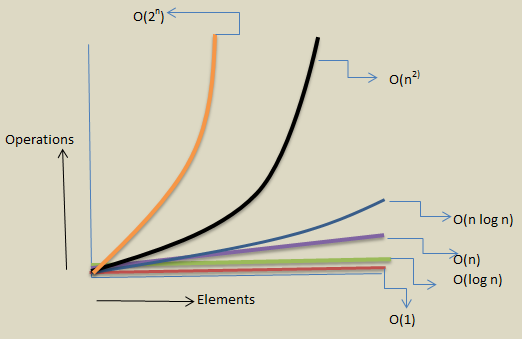

Pragmatic optimization
In modern programming
Ordering optimization approaches
Created by Marina (geek) Kolpakova for UNN / 2015-2016
Course Topics
- Pragmatics
- Ordering optimization approaches
- Demystifying a compiler
- Mastering compiler optimizations
Outline
- What is optimization?
- Pragmatic approach
- Optimization trade-offs
- Knowledge which is required
- Where to get the performance?
- Optimization cycle
- Top-Down (High-low) approach
- Optimization cycle (revised)
- Optimization steps overview
- How to learn optimization?
- Recommended literature
- Summary
What is optimization?
In computing, optimization is a process of modifying a system to make some aspect of it to work more efficiently or use fewer resources, in particular, a process of transforming a piece of code to make it more efficient without changing its output.
Pragmatic approach
“Programmers waste enormous amounts of time thinking about, or worrying about, the speed of non-critical parts of their programs, and these attempts at efficiency actually have a strong negative impact when debugging and maintenance are considered. We should forget about small inefficiencies, say about 97% of the time; premature optimization is the root of all evil. Yet we should not pass up our opportunities in that critical 3%.“-Donald Knuth, Structured Programming With go to Statements
- Find what to start from (3%)
- Know when to stop (97%)
Optimization trade-offs
- Code portability decreases when we go deeper
- Performance portability decreases when we go deeper
- The cost of maintenance and extensibility increases
when we go deeper - Optimizations are often not reusable
- Optimizations become obsolete very quickly
...but still performance is a crucial requirement for most applications.
Knowledge which is required
- The code
- The problem, it solves
- The algorithm, it implements
- The algorithmic complexity
- The compiler
- Compilation trajectory
- Compiler's capabilities and obstacles
- The platform
- Architecture capabilities
- Instruction Set Architecture
- Micro-architecture specifics
- Architecture capabilities
Where to get the performance?
| High-level | Programmer |
| Middle-level | Compiler |
| Low-level | Hardware |
Optimization cycle

Top-Down (High-low) approach
- Understand the code
- Use appropriate algorithms
- Optimize memory access patterns
- Minimize number of operations
- Shrink the critical path
- Perform HW-specific optimizations
- Dive into assembly
Optimization cycle (revised)
step #1: Understand the code
- Different people think differently
- you'll need some time to get used to the code
- Understand dataflow
- input/output parameters
- data dependencies
- Identify performance limiters
- Time
- Profile
- Collect metrics
- e.g. CPI, power consumption
Step #2: use appropriate algorithm
- Consider and lower big O complexity 
- Choose data structures wisely
- Look for optimized libraries
- Find opportunities to scalarize & parallelize
Step #2: use appropriate algorithm
Compilers are not aware of semantics of code, taking this into account focus on an algorithmic aspect first.
- Decrease big-O complexity
- Use optimized libraries for subroutines
- Restructure the code to use fewer resources
- Split problem on subtasks, organize them wisely
- Parallelize
What if you need to sort 100 Mb of numerical data...
What sorting algorithm would you choose?
Step #3: optimize memory accesses
You'll be surprised how many algorithms are memory bound!
Optimization for memory usually involves:
- Data restructuring
- to load only data that is really needed for computations.
- Data packaging
- to shrink the data in size
- Loop transformations
-
- to walk through the data in a more efficient way,
- to increase temporal & spacial locality,
- to perform cache-aware optimization
Step #3: optimize memory accesses
Compilers are quite good at local optimization, such as
- loop bodies transformations,
- local functions inlining,
- arithmetic expressions simplification
so help a compiler rather than try to outfox it.
Work cohesively with it on
- enabling auto-vectorization,
- optimizing critical loops,
- vectorizing.
Step #3: optimize memory accesses
for (int j = 0; j < height; j++)
for (int i = 0; i < width; i++)
if (img[j * width + i] > 0)
count++;for (int i = 0; i < width; i++)
for (int j = 0; j < height; j++)
if (img[j * width + i] > 0)
count++;Which is more optimal for conventional CPU processor?
Step #3: optimize memory accesses
for (int j = 0; j < height; j++)
for (int i = 0; i < width; i++)
if (img[j * width + i] > 0)
count++;for (int i = 0; i < width; i++)
for (int j = 0; j < height; j++)
if (img[j * width + i] > 0)
count++;Step #4: minimize number of operations
Reducing a program in the number of operationsThe compiler usually helps a lot here:
doesn't necessarily decrease its runtime,
but it's a good heuristic, though.
Machine-independent optimizations
|
Machine-dependent optimizations
|
Step #4: minimize number of operations
float pows(float a,float b,float c, float d, float e, float f, float x)
{
return
a * powf(x, 5.f) +
b * powf(x, 4.f) +
c * powf(x, 3.f) +
d * powf(x, 2.f) +
e * x + f;
}Step #4: minimize number of operations
|
|
Step #4: minimize number of operations
float horner(float a, float b, float c, float d, float e, float f, float x)
{
return ((((a * x + b) * x + c) * x + d) * x + e) * x + f;
}horner:
flds s15, [sp, #8]
fmsr s11, r0
fmsr s12, r1
flds s14, [sp]
vfma.f32 s12, s11, s15
fmsr s11, r2
flds s13, [sp, #4]
vfma.f32 s11, s12, s15
fcpys s12, s11
fmsr s11, r3
vfma.f32 s11, s12, s15
vfma.f32 s14, s11, s15
vfma.f32 s13, s14, s15
fmrs r0, s13
bx lrStep #4: minimize number of operations
Unfortunately, sometimes a compiler fails some optimization steps (e.g. register allocation, scalarization) and harms the performance by introducing redundant operations.
Starting from this optimization step it is worth to look at the assembly code to check whether the compiler is actually automating a particular optimization.
Step #5: shrink the critical path
Critical path is the longest sequence of operations in a code block that must be completed in order, which is usually caused by dependencies between steps or operations.
- The critical path of a code block is hardly deducible from high-level code and requires assembly inspection.
- Knowledge about architecture capabilities is required to estimate critical path more precisely.
- Some profilers are able to do critical path analysis.
- The term could also refer to the longest sequence of dependent steps in a pipeline that limits its parallelization.
- Control-flow diagram is used to finding the critical path.
Step #5: shrink the critical path
Let's look at the critical path of the following code block.
const uint8_t* p0 = src.ptr(row0);
const uint8_t* p1 = src.ptr(row1);
uint8_t* dptr = dst.ptr(row);
for (int col = 0; col < cols; ++col)
{
dptr[col] = (p0[col*2]+p0[col*2+1]
+ p1[col*2]+p1[col*2+1]+2)>>2;
}What is the critical path of this code line?
Step #5: shrink the critical path
Let's create 3-positional representation of the code block
r0 = col*2 // 1
r1 = r0+1 // 2
r2 = load(sptr0, r0) // 3
r3 = load(sptr0, r1) // 4
r4 = load(sptr1, r0) // 5
r5 = load(sptr1, r1) // 6
r6 = r2+r3 // 7
r7 = r6+r4 // 8
r8 = r7+r5 // 9
r9 = r8+2 // 10
r10 = shl(r9, 2) // 1111 ?
Let's construct the dependency graph...
Step #5: shrink the critical path
8 ?
Step #5: shrink the critical path
But, the compiler reorders instructionssince integer math is associative 
6 ?
Step #5: shrink the critical path
And let's assume that hardware schedules1 arithmetic and 1 memory operation per clock. 
and back to 8 again
Step #6: do HW-specific optimization
It requires comprehensive understanding of the target HW,
which usually goes beyond compiler's abilities
- Using special hardware capabilities
- Overcoming micro-architecture weakness
- Using instructions, which are specific for concrete HW
- balancing usage of different instruction types
A classical example here is a question of recomputing temporal v.s. getting it from the memory.
Step #6: do HW-specific optimization
Modern hardware is quite advanced,
- deep pipelines,
- out-of-order execution,
- sophisticated branch prediction,
- multi-level memory hierarchies,
- processor specialization.
so utilize unique properties of the hardware.
Peephole optimization is not as important
as used to be 10 years ago.
Step #7: dive into assembly
Assembler is a must-have to check the compilerRaw assembly make sense to:
but it is rarely used to write low-level code.
- Overcome compiler bugs & optimization limitations
- addition of redundant instructions
- suboptimal register allocation
- Use specific hardware features
- which are not expressed in higher level ISA
Keep in mind that:
- Assembly writing is the least portable optimization
- In-line assembly limits compiler optimizations
How to learn optimization?
Optimization is a craft rather than a science.
- Practice more
- Do not make practical knowledge too theoretical.
- Look, what other people do
- Do find real use cases of different optimization approaches and techniques.
- Dig into an architecture
- HW evolves rapidly hence devices obsolete in a wink. Comprehensive knowledge helps see beforehand.
Recommended literature

Computer Architecture, Fifth Edition:
A Quantitative Approach
by
John L. Hennessy
and
David A. Patterson.
Recommended literature
Recommended literature

Is Parallel Programming Hard,
And, If So, What Can You Do About It?
by
Paul E. McKenney
Recommended literature
Summary
- Practice, look what others do and dig into an architecture.
- The main task of an optimizer is finding the critical part.
- Optimizer's mastership is to know where to stop.
- Knowledge about the code, the compiler and the platform is a must-have.
- Optimization is a measure-analyze-optimize-check cycle.
- Stick to the high-to-low approach.
- Get the performance from algorithmic and data structure choices first,
- ... ensure memory access patterns next,
- ... then go deeper.